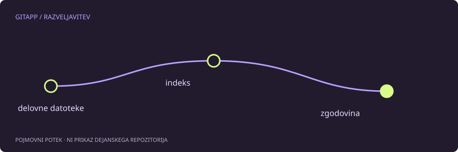

Beseda razveljavitev skriva tri različne cilje
Želiš izločiti datoteko iz priprave? Zavreči njeno lokalno urejanje? Ali ustvariti novo potrditev, ki obrne učinek že objavljene spremembe? Vse to lahko pogovorno imenujemo razveljavitev, Git pa ima zanje različne operacije.
Pred izbiro poglej git status, obe obliki razlik in zadnje potrditve. Preveri tudi, ali je sprememba že objavljena in ali jo kdo uporablja. Neznano stanje ni dober trenutek za ukaz z največjim obsegom delovanja.
Restore cilja vsebino poti
git restore lahko obnavlja delovne datoteke, indeks ali oboje, odvisno od možnosti. Brez posebnih možnosti za izbrano pot praviloma obnavlja delovno drevo iz indeksa. Z --staged obnavlja indeks, privzeto iz HEAD.
To pomeni, da lahko restore uniči nepripravljeno lokalno vsebino. Sam ukaz ni niti vedno varen niti vedno nevaren; pomembni so cilj, vir in poti. Za izločitev iz priprave ni treba prepisovati zgodovine veje.
Reset ima več oblik
git reset z navedeno potjo lahko spremeni samo indeks. Oblika s ciljno potrditvijo pa lahko premakne trenutno vejo in glede na način spremeni tudi indeks ter delovno drevo.
Pri --soft se premakne referenca, indeks in delovne datoteke ostanejo. Pri običajnem --mixed se spremeni tudi indeks. --hard poseže še v delovno drevo in lahko zavrže spremembe sledenih datotek; nesledene poti, ki ovirajo zapis, so lahko prav tako prizadete. To ni ukaz za nejasno težavo.
Revert doda novo zgodovino
git revert poskusi obrniti spremembe izbrane potrditve in rezultat zabeleži z novo potrditvijo. Stare potrditve ne izbriše. Zato je pogosto primernejši za skupno vejo kot premikanje veje nazaj in prisilno pošiljanje.
Tudi revert lahko povzroči spor, posebno če se je ista vsebina pozneje spremenila. Razveljavljanje združitvene potrditve potrebuje dodatno razumevanje glavnega starša in vpliva na prihodnja združevanja. Začetni pomočnik takšnega primera ne avtomatizira.
Kratka primerjava
| Namen | Običajna smer razmisleka | Glavno opozorilo |
|---|---|---|
| Izločitev poti iz priprave | restore --staged | Potreben je ustrezen vir |
| Obnova delovne datoteke | restore | Lokalna vsebina se lahko izgubi |
| Obrnitev objavljene potrditve | revert | Lahko nastane spor |
| Premik zasebne lokalne veje | reset | Način določa obseg posega |
Odločitev brez avtomatizma
Če želiš ohraniti vsebino, tega izrecno povej in preveri posledice na vsakem nivoju. Če ne veš, ali je veja deljena, jo obravnavaj previdno in se najprej pozanimaj. Interaktivni izbirnik razloži smer, ne izvaja ukazov in ne jamči, da so tvoji odgovori popolni.
Vir in obseg
Referenca: uradni priročnik za git-reset. Primeri so pripravljeni za učenje in niso opis posega v dejanski projekt. Preberi način preverjanja.